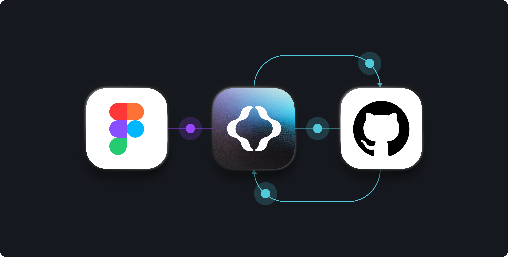
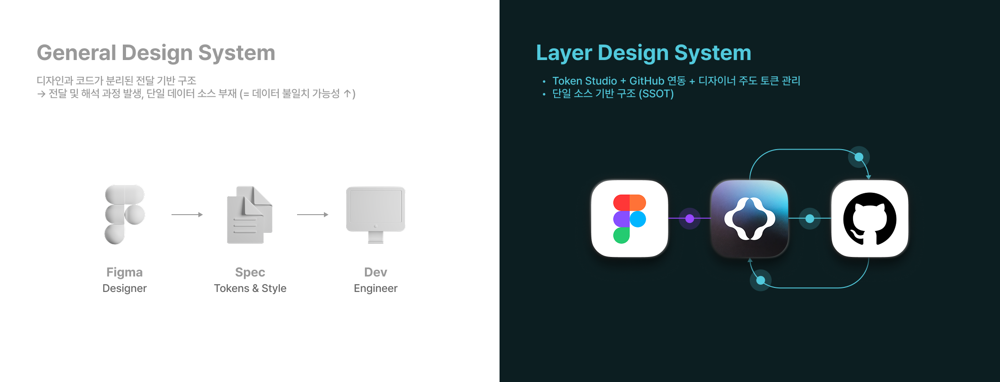
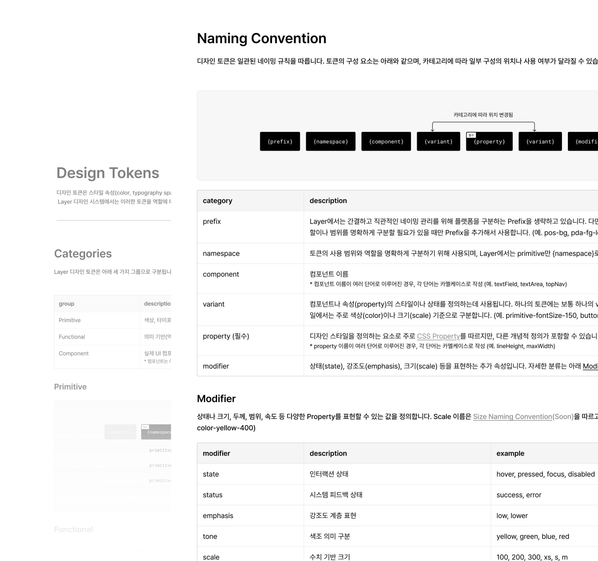
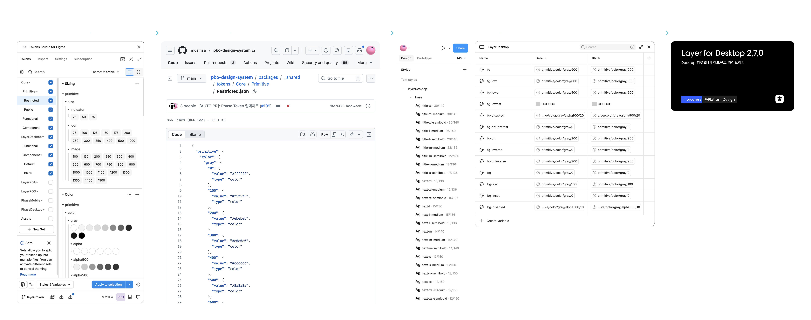

Overview 개요
Token Studio + GitHub 기반 토큰 운영 구조 설계
디자인 토큰을 디자인과 개발을 연결하는 핵심 데이터로 정의하고, 이를 하나의 소스로 관리할 수 있는 운영 구조를 함께 설계했습니다. Token Studio와 GitHub를 연동하여 디자이너가 직접 토큰을 생성·수정하고, 동일한 데이터를 코드에서도 사용할 수 있는 환경을 구축했습니다. 이를 통해 디자인 토큰은 더 이상 디자인 산출물이 아니라 시스템 전반에서 일관되게 사용되는 데이터로 작동하도록 구성했습니다.
Collaborators 협업
Platform designer(1)
Goals 목표
Design Process 디자인 프로세스
운영 방식 리서치
토큰 관리 구조 정의
Token Studio + GitHub 연동
디자인 토큰
구조 설계
디자인 토큰
네이밍 규칙 정의
디자인 토큰
설계
GitHub 배포 및 Styles & Variable 적용
Testing and iteration
라이브러리 배포
Research 연구
디자인 시스템이 지속적으로 운영되기 위해서는 토큰을 어떻게 관리하고, 누가 운영할 것인지에 대한 기준이 필요했습니다. 일반적인 협업 구조에서는 디자인과 개발이 분리된 상태에서 서로를 해석하며 작업하게 되고, 이 과정에서 불필요한 커뮤니케이션 비용과 반영 지연이 발생하게 됩니다. 즉, 디자인과 코드가 동일한 데이터를 기반으로 동작하지 않는 구조는 시스템 확장 시 일관성을 유지하기 어렵다고 판단했습니다.

이러한 구조적 한계를 해결하기 위해 토큰을 단순히 개발에 전달하는 디자인 산출물이 아닌 시스템 전반에서 공유되는 데이터로 정의하고, Token Studio와 GitHub를 연동한 토큰 관리 구조를 설계했습니다.
Design Results
토큰을 일관되게 정의하고 확장할 수 있도록 역할 기반 네이밍 규칙을 설계했습니다. 이 구조를 통해 디자이너와 개발자가 동일한 기준으로 토큰을 이해하고 사용할 수 있도록 공통 언어 체계를 구축했습니다.

Design Results
Token Studio와 GitHub를 연동하여 토큰을 단일 소스로 관리하고, Figma Styles & Variables와 코드에 동일한 데이터로 적용되는 구조를 구축했습니다.

Testing and Integration
into Product 테스트와 제품 통합
토큰 구조가 실제 제품 환경에서도 일관되게 작동하는지 검증하기 위해 컴포넌트 및 디자인 시스템 라이브러리에 적용 테스트를 진행했습니다. 다음 테스트를 통해 실제 제품 환경에서 작동 가능한 시스템임을 확인했습니다.
Results and
Achievements 결과 및 성과
~ 50% ↓
Update Speed
~ 30% ↓
Communication Cost
General Workflow
⚠️ 반복 커뮤니케이션 발생 구간
Token-based Workflow (Layer Design System)
단일 소스로 토큰을 관리하는 구조를 통해 일관된 UI 경험을 확보하고, 유지보수 효율을 향상시켰습니다. 일반적인 전달 기반 프로세스와 비교했을 때, 제품 반영 단계를 단순화 하여 반영 속도를 약 50% 이상 단축할 수 있었고, 스타일 정의 및 확인 과정에서 발생하던 반복 커뮤니케이션 비용 역시 약 30% 이상 줄일 수 있었습니다.
이 구조는 이후 Layer 2.0 : Core Design System↗︎ (Soon) 설계로 확장될 수 있는 기반이 되었습니다.